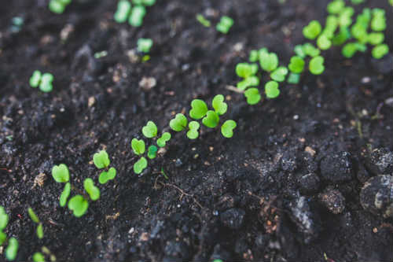

Greenville Events

--
--
--
--
Tip of the day:
Even though it seems like spring outside temperatures will continue to fluctuate so hold off until after the last frost date before transplanting worm season plants. Focus on raising transplants indoors or sprouting cold season seeds. keeps seedlings moist even in colder weather, damp is better than dry. Plant cells are much hardier when they are hydrated. Though keep foliage as dry as possible.